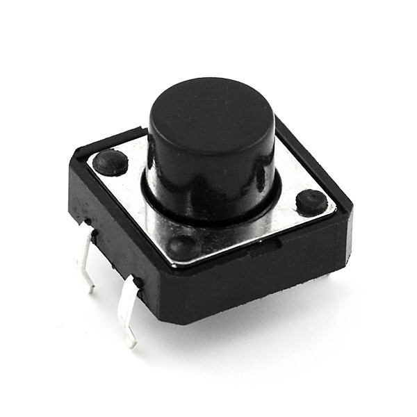

Bienvenido a Arduino Fácil, tu destino en línea para explorar el fascinante mundo de Arduino y sus componentes. Si estás comenzando tu viaje en la electrónica o buscando expandir tus conocimientos, has llegado al lugar correcto. Aquí, nos centramos en algunos de los componentes más versátiles y utilizados que pueden llevar tus proyectos al siguiente nivel:
El diario de Arduino: Componentes Esenciales para Tus Proyectos
Componentes
LED
La luz emitida por diodo (LED) es fundamental en proyectos de Arduino, perfecta para aprender sobre circuitos básicos y cómo controlar elementos externos. Desde indicadores simples hasta crear tu propia matriz de LEDs, las posibilidades son infinitas.
Botón
El botón o pulsador es el componente de entrada más básico pero esencial. Te enseñamos a detectar interacciones físicas, una habilidad clave para controlar todo tipo de dispositivos electrónicos con Arduino.
Relé
El relé es un interruptor controlado eléctricamente que te permite encender o apagar dispositivos de mayor potencia que no pueden ser controlados directamente por Arduino. Es ideal para proyectos de domótica, donde necesitas controlar lámparas, ventiladores, o incluso sistemas de riego.
DHT11
Este sensor de temperatura y humedad es perfecto para proyectos ambientales. Ya sea que estés construyendo una estación meteorológica casera o un sistema de control para tu invernadero, el DHT11 es fácil de usar y proporciona datos valiosos para tus proyectos.
ServoMotor
Controla con precisión el movimiento. Los servomotores son ideales para proyectos que requieren movimientos precisos o posicionamiento controlado, cómo brazos robóticas o sistemas de seguimiento solar.
ESP-01
Basado en el ESP8266, este módulo Wi-Fi te permite agregar fácilmente conectividad a Internet a tus proyectos de Arduino. Desde controlar dispositivos a través de Internet hasta recoger datos de sensores remotos, el ESP-01 abre un mundo de posibilidades para proyectos IoT.
En el diario de Arduino, encontrarás tutoriales paso a paso, ejemplos de proyectos, y consejos prácticos para trabajar con estos componentes. Ya sea que tu interés resida en la automatización del hogar, la robótica, o simplemente en crear dispositivos inteligentes y conectados, tenemos los recursos que necesitas para triunfar en tus creaciones. ¡Explora con nosotros y transforma tus ideas en realidad!